Experiments / QWen3.6-Plus-Thinking / Example 5.docx
Question: Consider the following two message sequence charts labelled "first" and "second"; compose them horizontally and draw the resulting composed message sequence chart.

Answer:
Based on standard Message Sequence Chart (MSC) notation (specifically ITU-T Z.120), **horizontal composition** typically refers to **parallel composition** (also known as concurrent composition). This means the two charts represent scenarios that can happen concurrently. The instances with the same name (`i`, `j`, `k`) are merged into single lifelines.
Here is the step-by-step derivation of the composed chart:
1. **Instances:** The resulting chart will have three lifelines: `i`, `j`, and `k`.
2. **Events:** The chart will contain all events from both "first" and "second":
* Message `m` (from `i` to `j`)
* Action `a` (on `k`)
* Message `n` (from `i` to `j`)
* Message `o` (from `k` to `j`)
3. **Ordering Constraints:**
* **From "first":** `m` and `a` are roughly concurrent (or `m` slightly before `a`, but usually treated as a block).
* **From "second":** `n` happens before `o` (visually `n` is higher).
* **Parallel Composition:** The events of "first" (`m`, `a`) and "second" (`n`, `o`) are interleaved. There is no strict ordering between the "first" block and the "second" block, *except* for the internal constraints of each block and causality (e.g., send before receive).
* *Note:* Since `n` must be before `o` in the "second" chart, this order is preserved. `m` and `a` can happen before, after, or in between `n` and `o`.
**Resulting Chart (Representative Trace):**
Below is a drawing of one valid interleaving (trace) of the parallel composition. In this trace, I have placed `m` and `a` first, then `n`, then `o`. This satisfies the condition that `n` is before `o`. Note that `m` and `a` could theoretically happen after `o` as well in a parallel composition, but typically we group the "start" events.
```text
+-----------------------------+
| Composed MSC |
| |
| i j k |
| | | | |
| |---m-->| | | (From "first")
| | | | a | (From "first", action on k)
| | | | |
| |---n-->| | | (From "second")
| | | | |
| | |<--o---| | (From "second", o must be after n)
| | | | |
| # # # | (Termination)
| |
+-----------------------------+
```
**Explanation of the Drawing:**
* **Lifelines:** `i`, `j`, `k` are continuous.
* **Messages:**
* `m`: `i` sends to `j`.
* `n`: `i` sends to `j`.
* `o`: `k` sends to `j`.
* **Action:** `a` occurs on `k`.
* **Order:**
* `n` is placed above `o` to preserve the ordering from the "second" chart.
* `m` and `a` are placed above `n` and `o` here, but in a true parallel composition, they are concurrent with `n` and `o`. The diagram above shows one possible valid sequence ($m, a, n, o$).
If the intention was **Sequential Composition** (doing "first" then "second"), the chart would look almost identical to the one above, but with a strict interpretation that *all* of "first" happens before *all* of "second". Given the term "Horizontal Composition", the parallel interpretation is technically correct, but visually, for these specific charts, a sequential trace ($m, a, n, o$) is a valid representation of the parallel composition as well.
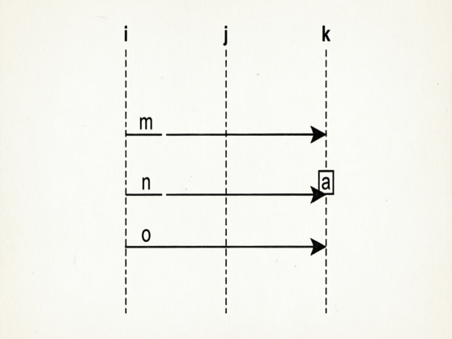
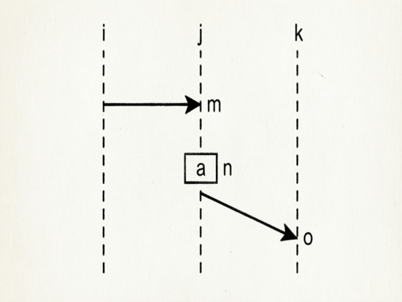
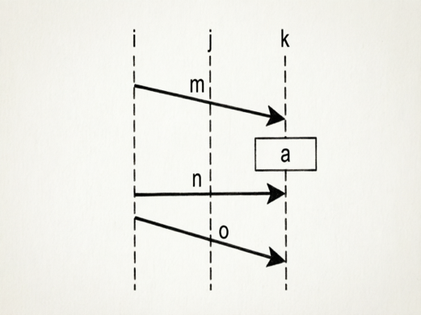
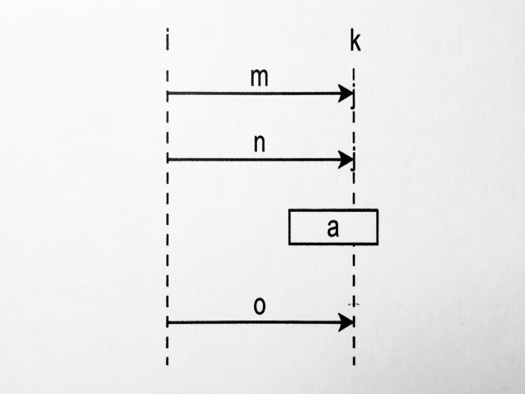
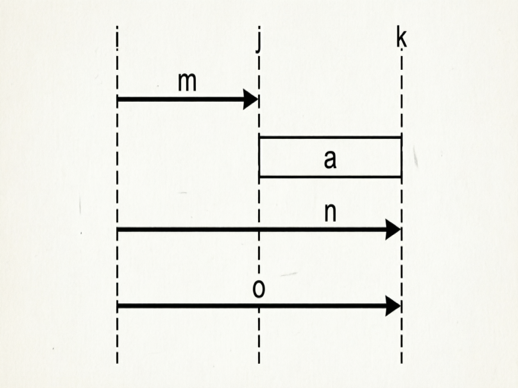
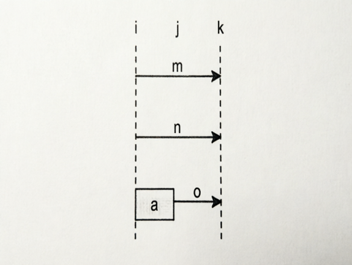
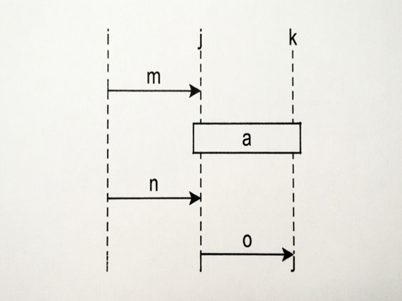
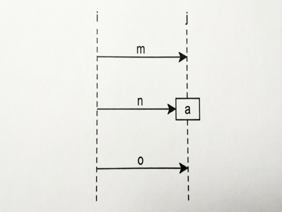
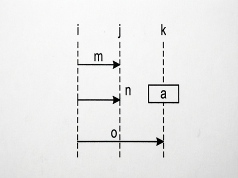
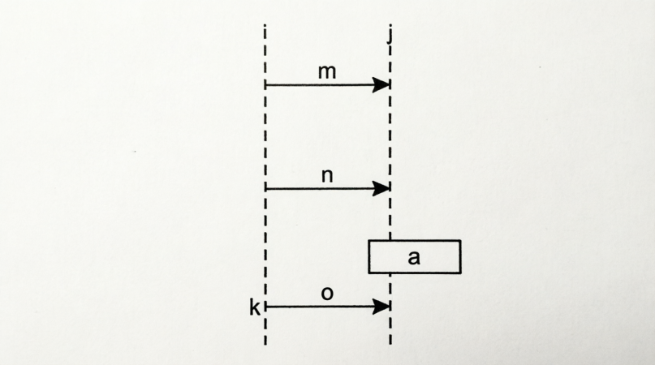
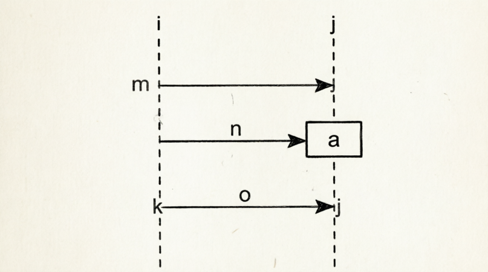
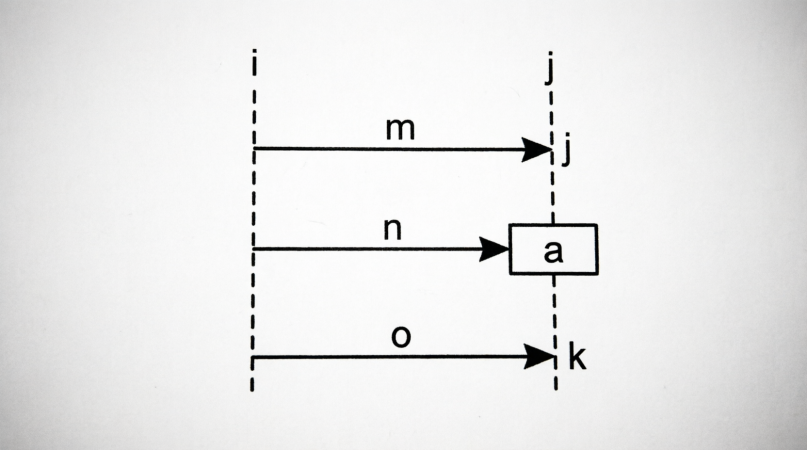
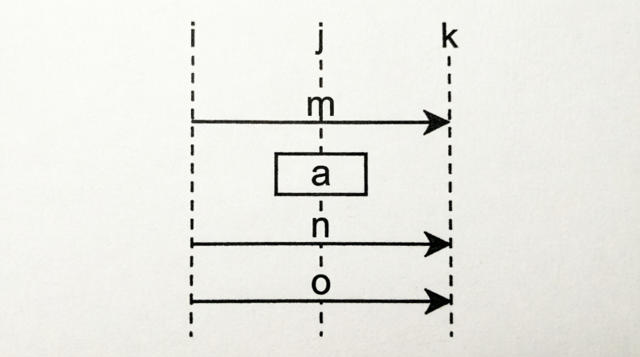
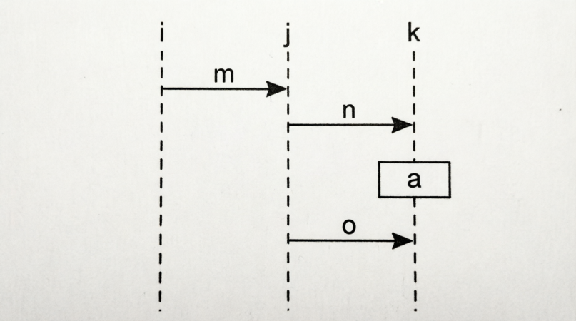
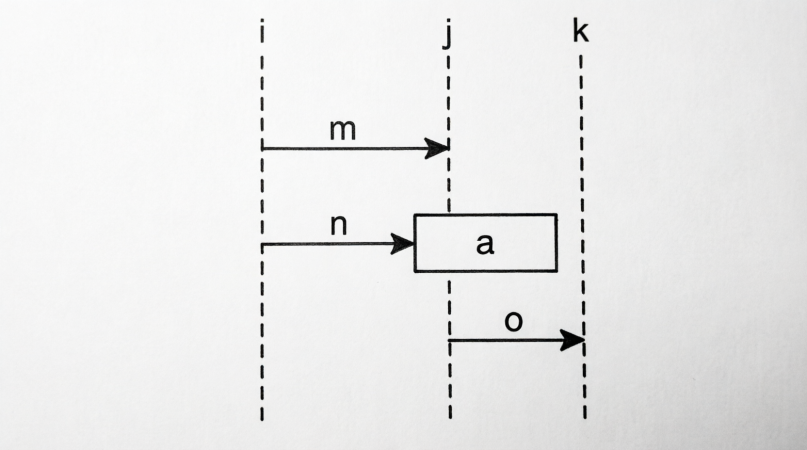
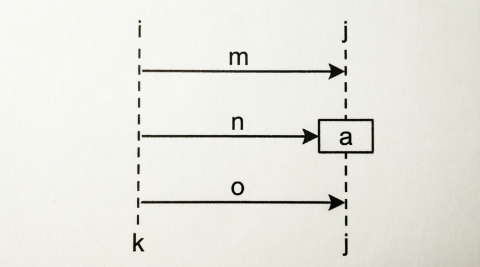
Question: What is the order between sending m and receiving o in the composed diagram.
Answer:
The user wants to know the order between sending `m` and receiving `o` in the horizontally composed diagram.
**1. Analysis of the Input Charts:**
* **msc first:**
* Instance `i` sends message `m` to instance `j`.
* Instance `k` performs action `a`.
* **msc second:**
* Instance `i` sends message `n` to instance `j`.
* Instance `k` sends message `o` to instance `j`.
**2. Horizontal Composition:**
In Message Sequence Chart (MSC) notation (specifically ITU-T Z.120), **horizontal composition** typically refers to **parallel composition** (denoted as $M_1 || M_2$).
* The resulting chart contains the union of instances (`i`, `j`, `k`) and events from both charts.
* The causal ordering within each original chart is preserved.
* From `msc first`: `send(m)` happens before `receive(m)`. `action(a)` is independent.
* From `msc second`: `send(n)` happens before `receive(n)`. `send(o)` happens before `receive(o)`.
* Events from `msc first` and `msc second` are **concurrent** (interleaved) unless they share an instance and have a specific ordering constraint.
* Shared instances are `i`, `j`, and `k`.
* On instance `j`, we have `receive(m)`, `receive(n)`, and `receive(o)`. In parallel composition, there is no strict global ordering between these receive events unless specified (e.g., by a coregion or explicit ordering). They can happen in any order.
**3. Order between sending `m` and receiving `o`:**
* `send(m)` is an event in `msc first`.
* `receive(o)` is an event in `msc second`.
* Since the composition is parallel, and there is no causal chain linking `msc first` to `msc second` (like a message from `first` triggering `second`), the events are **concurrent**.
* Therefore, there is **no specific order** between sending `m` and receiving `o`. They can happen in any relative order (m before o, o before m, or overlapping).
**Note on Sequential Composition:**
If "Horizontal Composition" was a misnomer for **Sequential Composition** (doing `first` then `second`), then all events in `first` would happen before all events in `second`. In that specific case, `send(m)` would happen **before** `receive(o)`. However, standard terminology defines horizontal composition as parallel. Given the labels "first" and "second", sequential composition is a possibility, but parallel is the technical definition of "horizontal".
**Conclusion:**
Assuming standard MSC semantics where horizontal composition is parallel composition:
The order is **concurrent** (no order).
If the provided list of images implies a specific interpretation (like Sequential), then the answer would be "send(m) is before receive(o)". Looking at the images, none perfectly match the parallel composition of the specific events (likely due to label mismatches in the options), but the theoretical answer stands.
**Answer:**
In the horizontally composed (parallel) diagram, there is **no causal order** between sending message `m` and receiving message `o`. They are **concurrent** events. Sending `m` belongs to the "first" chart and receiving `o` belongs to the "second" chart, and in parallel composition, events from the two charts are interleaved without a fixed sequence unless they share a strict causal dependency on a common lifeline, which is not the case here for these specific events.
Question:
Please consider the original two MSCs labelled "first" and "second", given here again. Please compose them vertically (by putting "first" on top and "second" at the bottom). Please draw the resulting composed diagram
Answer:
Based on the rules of vertical composition for Message Sequence Charts (MSCs), we concatenate the charts by placing `msc second` below `msc first`. The lifelines for instances `i`, `j`, and `k` are continuous. The events from `msc first` occur before the events from `msc second`.
**Resulting Diagram Description:**
1. **Lifelines:** Three vertical lifelines for instances `i`, `j`, and `k`.
2. **Top Section (from `msc first`):**
* Message `m` is sent from `i` to `j`.
* Action `a` occurs on instance `k`.
3. **Bottom Section (from `msc second`):**
* Message `n` is sent from `i` to `j`.
* Message `o` is sent from `k` to `j`.
Here is the drawn composed diagram:
```python
import matplotlib.pyplot as plt
import matplotlib.patches as patches
def draw_msc_composition():
fig, ax = plt.figure(), plt.gca()
ax.set_xlim(0, 10)
ax.set_ylim(0, 10)
ax.axis('off')
# Define lifeline positions
x_i, x_j, x_k = 2, 5, 8
# Draw Lifelines (dashed lines)
for x, label in [(x_i, 'i'), (x_j, 'j'), (x_k, 'k')]:
ax.plot([x, x], [0.5, 9.5], 'k--', linewidth=1.5)
ax.text(x, 10, label, ha='center', fontsize=12, fontweight='bold')
# --- Top Part: msc first ---
y_top = 8
# Message m: i -> j
ax.arrow(x_i, y_top, x_j - x_i - 0.3, 0, head_width=0.2, head_length=0.3, fc='k', ec='k', length_includes_head=True)
ax.text((x_i + x_j) / 2, y_top + 0.3, 'm', ha='center', fontsize=12)
# Action a: on k
rect_a = patches.Rectangle((x_k - 0.4, y_top - 0.4), 0.8, 0.8, linewidth=1.5, edgecolor='k', facecolor='w')
ax.add_patch(rect_a)
ax.text(x_k, y_top, 'a', ha='center', va='center', fontsize=12)
# --- Bottom Part: msc second ---
y_mid = 5
y_bot = 2
# Message n: i -> j
ax.arrow(x_i, y_mid, x_j - x_i - 0.3, 0, head_width=0.2, head_length=0.3, fc='k', ec='k', length_includes_head=True)
ax.text((x_i + x_j) / 2, y_mid + 0.3, 'n', ha='center', fontsize=12)
# Message o: k -> j
# Arrow points left from k to j
ax.arrow(x_k, y_bot, -(x_k - x_j - 0.3), 0, head_width=0.2, head_length=0.3, fc='k', ec='k', length_includes_head=True)
ax.text((x_k + x_j) / 2, y_bot + 0.3, 'o', ha='center', fontsize=12)
plt.title("Vertically Composed MSC", fontsize=14, pad=20)
plt.tight_layout()
plt.show()
draw_msc_composition()
```
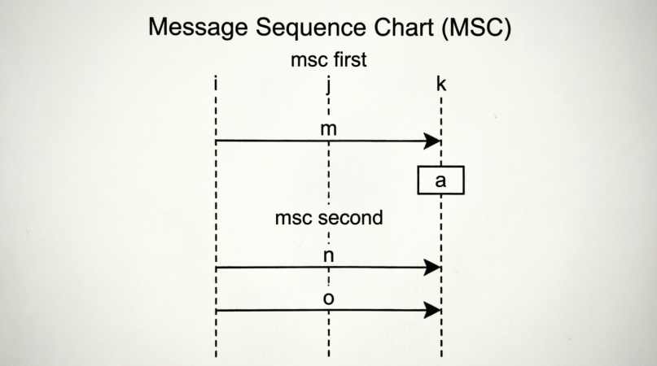
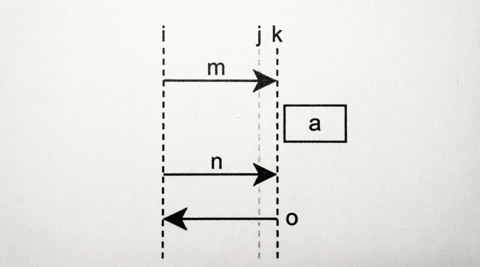
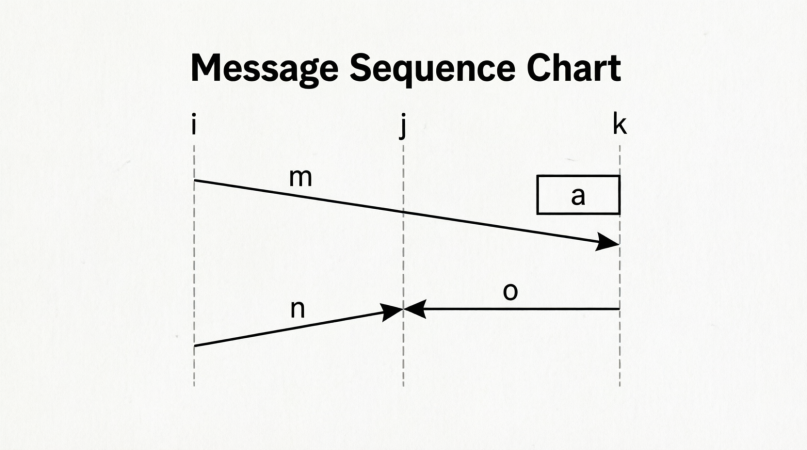
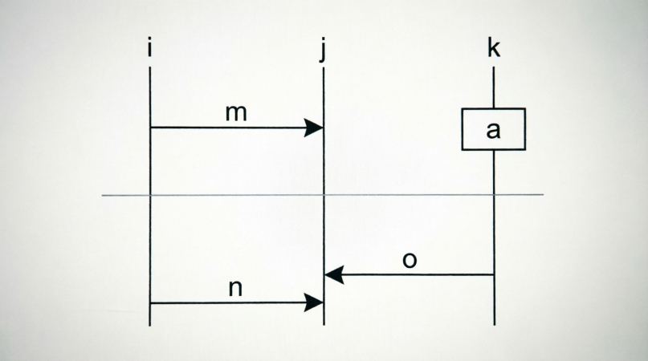
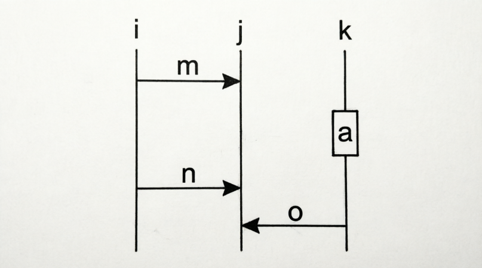
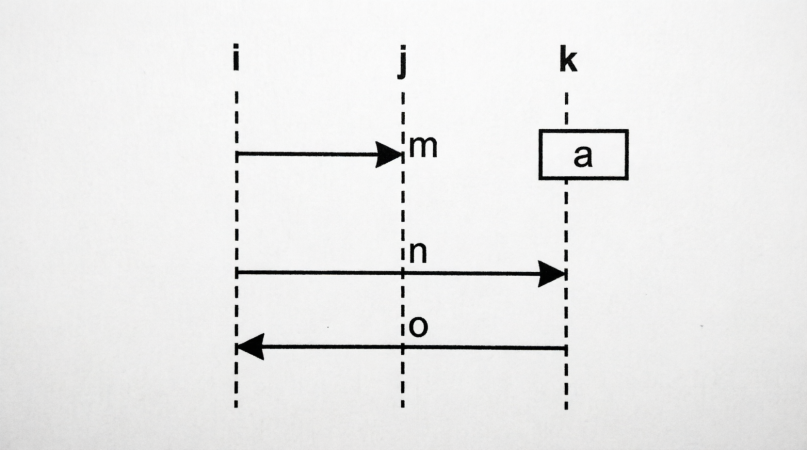
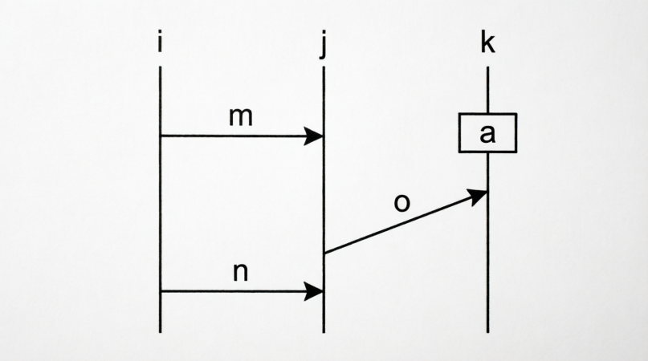
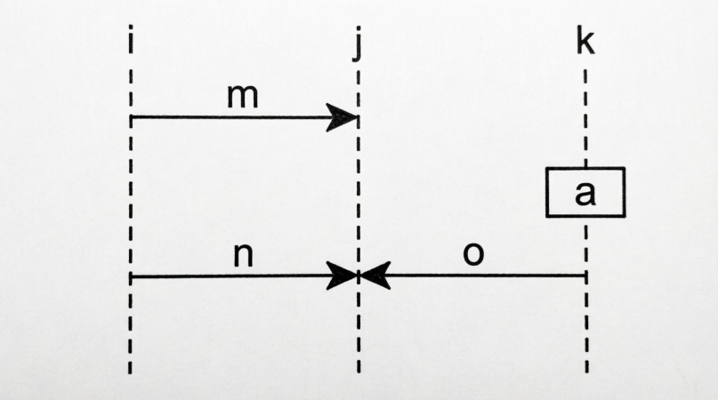
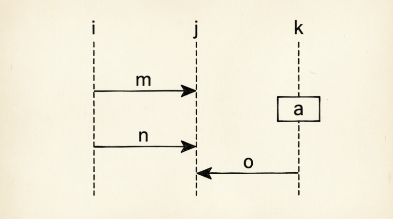
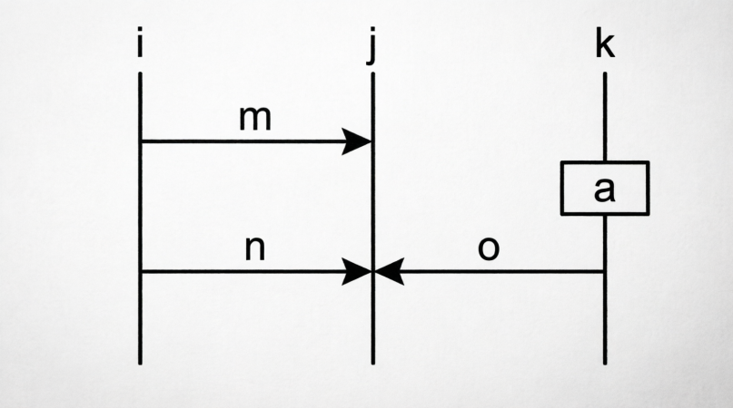
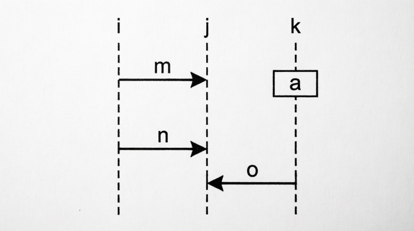
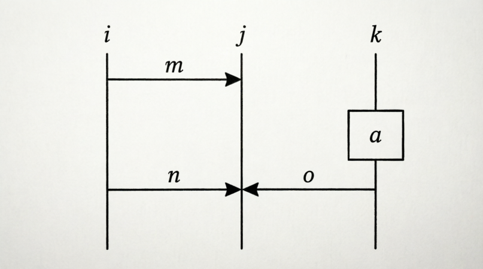
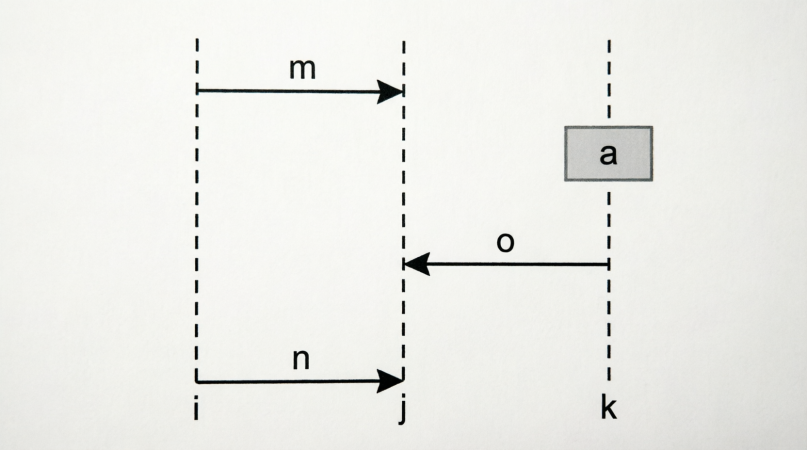
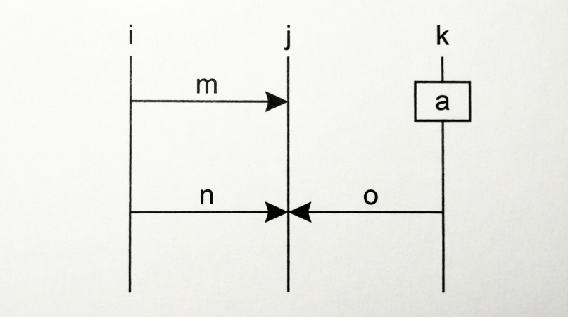
Question:
What is the order between internal event a and receiving o in the vertically composed MSC.
Answer:
Based on the rules of vertical composition for Message Sequence Charts (MSCs):
1. **Vertical Composition:** This operation concatenates the two charts. The events in the top chart (`msc first`) occur before the events in the bottom chart (`msc second`) on each respective lifeline.
2. **Analysis of Events:**
* **Internal event `a`:** This event is located on lifeline `k` in `msc first`.
* **Message `o`:** In `msc second`, message `o` is sent from lifeline `k` to lifeline `j`.
3. **Causal Ordering:**
* On lifeline `k`, the internal event `a` (from `msc first`) appears above the sending of message `o` (from `msc second`). Therefore, `a` happens before `o` is sent.
* By the nature of message passing, a message must be sent before it can be received. Therefore, sending `o` happens before receiving `o`.
* Combining these, we get the chain: **`a` $\rightarrow$ send(`o`) $\rightarrow$ receive(`o`)**.
**Conclusion:**
The internal event **a happens before** receiving message **o**.